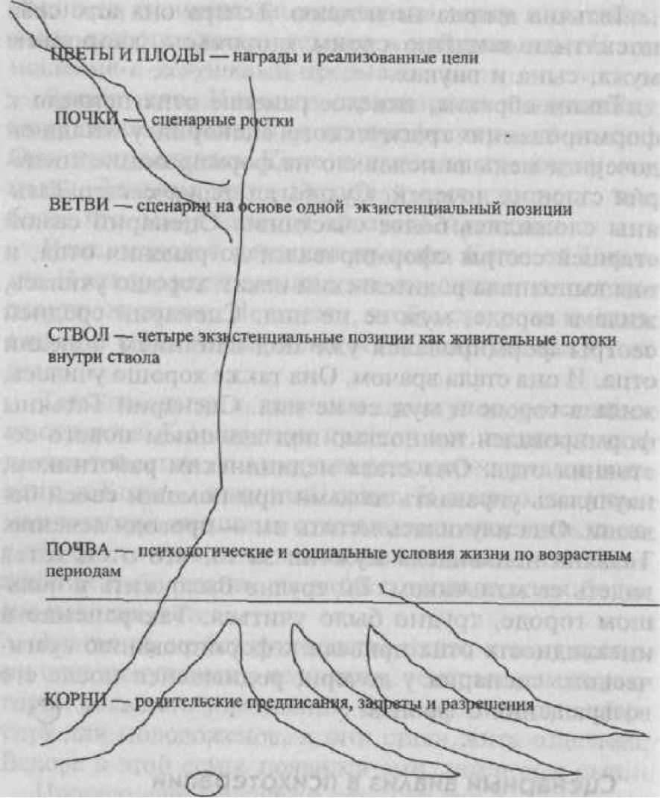

В современном подходе анализ развития жизненного сценария представляет собой иерархию, где психологические игры Э. Берна являются завершением процесса создания сценария, вершиной айсберга, основание которого уходит в историю развития ребенка, в историю его жизненного опыта.
Семейные сценарии передаются из поколения в поколение. Из Родительского состояния в Родительское передаются модели семьи — каково оптимальное количество детей и как их воспитывать, семейные традиции, ответственность и права каждого члена семьи. Вплоть до мелких подробностей семейного быта. И совместимость этих моделей может послужить неосознаваемой причиной заключения брака, а несовместимость может привести к распаду семьи. В родовых сценариях часто встречается феномен замещения. Например, замещающий ребенок, тот который замещает кого-либо из предыдущих поколений, например, умершего ребенка или родственника, значимого или любимого человека, который ушел вследствие развода, размолвки и прочее. Часто ребенку семья дает имя покойного, или он рождается в годовщину смерти. Такое поведение родителей или родственников подтверждает, что горе не было прожито до конца.
Приведем семь вопросов, которые обязательно задаются клиенту при заключении договора. Вот они:
Контракт может быть и двухсторонним. Вот выдержка из текста, который мы используем в работе. «Я, (ФИО клиента), выбираю жизнь и здоровье, вопреки любым чувствам, мыслям, обстоятельствам, которые могут возникнуть.
Я, (ФИО психотерапевта), приветствую данное решение и доверяю ему. Контракт заключается сроком на ... (оговоренный срок контракта). Дата. Подписи сторон». Контракт пишется в двух экземплярах, и пациент носит свой экземпляр всегда с собой. Когда у него возникает желание нарушить контракт, он обязан читать договор до тех пор, пока это желание не исчезнет. Обычно при заключении контракта мы просим клиента произносить вслух текст.
Для анализа родовых и семейных сценариев мы строим генограммы. Для этого надо собрать следующие данные:
— возраст на настоящий момент;
— даты смерти, возраст и диагноз умерших родственников;
— мифы и легенды, связанные с причиной смерти;
— разница в возрасте между супругами;
— смена фамилии;
— количество детей в семьях.
— профессии;
— болезни, алкоголизм;
— тюрьма;
— суициды, изнасилования, насильственная смерть;
— инцесты (Первого типа — запрещенные связи между кровными родственниками, второго типа — между людьми, которые стали родственниками в результате брака. Например, мужчина не должен иметь связи с сестрами или матерью жены или со второй женой своего отца).
Начинаем с проведения глубокого транса с воспроизведением внутриутробных переживаний и рождения. Иногда мы используем метафору зернышка, в котором зарождается жизнь, пробуждается жизненная энергия. Мы говорим об избранности, о неслучайном попадании искры жизни именно в это зернышко. Мы наблюдаем процесс набухания, появления первой трещинки в кожуре, первого корешка, затем листочка. После транса подробно обсуждаем: что это за зернышко — маковое семечко или кокосовый орех, откуда оно — из засушенного гербария, из заморского плода или ветром занесло. Мы узнаем о мифе его оплодотворения, о его роде, семействе, виде, климатическом поясе. Вся эта информация — опосредованный материал для глубинной психотерапевтической работы. Все образы, которые возникают в ходе работы, участники процесса зарисовывают.

Рис. Сценарное дерево
Далее в анализе сценария мы использовали метафору корней. Корни — это родительские предписания, которые действуют и создают мотивацию укрепления в социуме (в почве). Предписания, приказания — это невербальные послания от родителей и других значимых фигур, полученные в раннем детстве. Мы рассказываем о двенадцати группах предписаний. Предписания — запреты — это корни, которые не дают развиваться полноценно, они останавливают развитие или даже его прекращают. Так как родительские предписания передавались невербально, то уместны трансовые техники с регрессией в детство или анализ самих родительских фигур. Для этого, например, мы предлагаем клиентам или участникам терапевтических групп вспомнить пословицы, поговорки, летучие фразы, цитаты, которые использовали их родители. Как мать и отец радовались, печалились, их основные эмоции. Как они подшучивали (провокации и подстрекания, есть ли они в пословицах, которые повторяли Вам ваши родители). Что говорили родители о детях? Какими они должны быть? Что они говорили о Вас, ребенке? Реализовались ли Ваши родители? Они успешны? Осуществились ли их мечты? Если нет, кого они винят? После сбора информации клиенту задается циркулярный вопрос: «Представьте, что здесь сидят независимые эксперты (бабушки со скамейки во дворе, присяжные заседатели, дети из детского сада, любимая кошка, собака и т.д.). Что бы они могли сказать о человеке (о Ваших родителях) с таким набором ценностей?». Терапевт и клиент узнают ценности, экзистенциальные позиции, систему обмена поглаживаний, рэкетные чувства родителей клиента. Это тот багаж, который достается клиенту независимо от него, это наследство.
Далее мы используем метафору почвы. Почва — это социальная среда, ближайшее и отдаленное окружение. Как корни прорастали в почве? Свободно, так как почва была подготовлена, полита и удобрена с любовью и заботой, или корни пробивались через жесткий грунт, камни и глину — равнодушие и безразличие? На большом листе ватмана клиенты рисуют корни, почву, делают надписи родительских предписаний, обозначают породы почвы и возрастные периоды.
Следующий этап работы — использование метафоры мотиваций жизненных сил, энергии, стимулов, которые заставляли расти и двигаться живительные соки по корням. Здесь мы рассказываем клиентам о драйверах и паттернах сценарного процесса. Клиенты выбирают и записывают на рисунке название ведущего драйвера и сценарных паттернов. Например, драйвер «Будь сильным» и паттерн «Пока не».
Теперь пора формировать ствол дерева. Четыре жизненные позиции благополучия, как четыре потока, поднимаются по стволу сценарного дерева. Дерево растет и в разные возрастные периоды то один то другой поток становится главенствующим. Мы просим нарисовать на стволе дерева четыре потока и выделять цветом доминирующие. С клиентами на индивидуальных сессиях и в терапевтических группах мы подробно анализируем те события или изменения в окружении клиента, которые приводили к смене позиций в его жизни. Наибольшее внимание мы уделяем переключениям в позицию благополучия.
Мы просим клиента проанализировать настоящее время на сценарном дереве. И задаем вопросы: «Что послужило поводом для вхождения и для выхода из жизненной экзистенциальной установки, которая доминирует в настоящее время? В период переживания проблемы или стресса?
Из ствола дерева вырастают ветви — сценарные ростки. Каждая ветка вырастает из одного потока или экзистенциальной позиции. Здесь принципиальное отличие нашего подхода к сценарию от классической трактовки. По нашим данным, сценариев всегда несколько. В разные возрастные периоды в зависимости от внешних и внутренних условий вырастают или активизируются те или иные сценарии.
Ветви представляют собой сценарные ростки. У каждого человека возможно наличие многих, по-разному развитых ветвей. Ветви из ствола «Я− Ты−» являют трагический сценарий, «Я− Ты+» — банальный, «Я+ Ты−» — сценарий с преобладанием над окружающими, сценарий воинствующей личности, «Я+ Ты+» — оптимистический сценарий удачника.
На этом этапе работы мы обычно просим клиента или участников группы взять свои рисунки, посмотреть на возрастные периоды смены жизненных установок и вспомнить наиболее значимые события, которые привели к этой смене. Вспомнить наиболее глубокие переживания того периода, принятие решения. Просим отметить эти события на рисунке парой слов, взять их в кавычки. Это возможное название сценария.
Дальнейшую работу с «Деревом» можно продолжать, ориентируясь на будущее. Предлагая клиенту или участникам группы нарисовать цветы, плоды на дереве, обозначить ландшафт, задав вопросы: «Опишите место, где растет Ваше дерево, что вокруг. Кто ухаживает за деревом? Плодоносит оно или нет?». Такие вопросы ориентируют клиента на будущее, на результат.
В заключение мы предлагаем клиенту или участникам группы вновь нарисовать сценарное дерево. «Уберите старые ветки, черные корни, добавьте те, которые дают энергию и будущее вашему сценарному дереву», — предлагаем мы.
Сказка. Вот методика, предложенная Ф. Инглиш (1969).
«Придумайте сказку, охватывающую всю Вашу жизнь, включая сегодняшний день. Персонажи этой сказки не люди и не мир людей. Сказка может описывать мир животных или сказочных существ. Перед тем как написать сказку, вы можете обдумать сюжет, но когда вы будете готовы, то пишите ее не больше 10 минут».
Дальнейшая работа направлена на обсуждение с клиентом следующих вопросов:
Далее можно предложить клиенту или участникам терапевтической группы продолжить сказку в будущее. Затем, анализируют обе сказки, важно отследить, использует ли клиенты старые цели, стратегии, распространяя их на будущее, или нет.
Мы начинаем работу с определения ценностей в жизни клиента. «Подумайте, говорим мы. Существует ли в Вашем сценарии дефицит таких чувств как: спонтанность, свобода, уверенность, близость, эмоциональная насыщенность, радость, любовь, полнота жизни? Проанализируйте ценности Вашего сценария, конечную награду. Цели, которые лежат в основе сценария, ради чего он разыгрывается. Цели являются как бы нитями, на которые элементы сюжета нанизываются, как бусы. Определите цели, реализация которых принесет чувства автономии, спонтанности и радости. Отказываться от старых целей не надо, надо изменить эмоциональную окраску, нагрузку, сменить акценты, если это возможно. Если не удается, возвращайтесь к определению целей, вновь к их ревизии. Ищите те нити, которые дадут жизнь сценарию, внесут энергию и позитивные чувства. Цели, как струны должны заиграть, запеть, дать мелодию сценарию. Какую мелодию вы бы хотели сыграть? Как вы ее слышите?»
Выделите эти цели, визуализируйте свою сказку-сценарий, усильте его будущее этими вновь зазвучавшими целями — нитями, струнами. Играйте с картинкой, пока она не устроит вас полностью.
После того, как эта работа успешно проведена, мы даем домашние задания по выработке и опробованию новых стратегий достижения цели. Мы обсуждаем и записываем несколько стратегий и клиент в перерывах между сессиями тренируется по их реализации.
Мы в своей работе используем стратегии, которые основаны на работе со всеми сферами жизни клиента. Вот основополагающие тезисы этой стратегии:
Медитация «Предки». Ложитесь (садитесь) поудобнее. Закройте глаза. Разрешите себе расслабиться. Прислушайтесь к своему дыханию. Представьте, что Вы идете по дороге... по своей жизненной дороге... Постарайтесь почувствовать — насколько Вам удобно и комфортно идти? Легко ли Вам дышать? Обратите внимание на то, что Вам мешает... а что помогает... Остановитесь. Осмотритесь по сторонам... что притягивает Ваш взгляд слева... или справа... что Вы видите впереди... Посмотрите себе под ноги... А теперь обратите взгляд вверх... Посмотрите: какая погода... какое время года... и какое время суток... Теперь представьте, что сзади Вас появились Ваши родители... а также их родители — Ваши бабушки и дедушки... их братья и сестры... их дяди и тети... Даже если Вы никогда не видели кого-то из них и даже не слышали ничего о них, они все реально существовали, жили, работали, читали книги, разговаривали друг с другом, со своими друзьями, соседями... И у каждого из них были свои родители... бабушки, дедушки, прабабушки и прадедушки... Постарайтесь представить их всех, стоящих за Вашей спиной... Их может быть тысяча... или 10 тысяч... и даже несколько миллионов... Теперь повернитесь к ним... Посмотрите, как много людей являются Вашими предками... Если Вам трудно увидеть их, постарайтесь почувствовать их присутствие... Вы даже можете увидеть их лица, рассмотреть их одежду... Кто-то из них может быть одет в домашний халат или в рыцарские доспехи... Среди Ваших предков могут быть и крестьяне, и полководцы... живописцы и изобретатели... Сейчас Вы можете подойти к любому из них... кого-то обнять... у кого-то попросить совета... Каждый из них... и все они вместе готовы помогать Вам... поддерживать Вас... Теперь, когда Вы собрали их всех вместе, они всегда будут рядом... Вы можете им доверять... Еще раз посмотрите на Ваших предков... Частичка каждого из них есть в Вас... Они будут давать Вам силы, здоровье, помогать принимать решения и учиться на ошибках... Они хотят, чтобы Вы были счастливы... Примите их помощь и поблагодарите их за это... А теперь Вы возвращаетесь на дорогу своей жизни... Осмотритесь... Запомните те изменения, которые произошли вокруг Вас... Идя по дороге, Вы чувствуете поддержку всех Ваших предков, десятков поколений... Они все за Вами... и они все за Вас... Они хотят, чтобы Вы были счастливы... жизнерадостны... успешны... Вы обязательно оправдаете их надежды... В любой момент Вашей жизни энергия Ваших предков будет с Вами... И сейчас, идя по дороге, Вы чувствуете эту энергию... И в любой момент, когда Вам нужна будет поддержка, Вы сможете обратиться к ним... И теперь Вам пора возвращаться... Не торопясь сделайте глубокий вдох и на выдохе откройте глаза...
Какие существуют разрешения? Например, для сценарного поведения «Пока не» разрешением будет девиз — «Жить и радоваться сегодня, не ждать окончания работы». Находить радость в каждом шаге, мгновении, которые приближают к цели. Для сценарного паттерна «После» разрешением будет — «Жить и радоваться сегодня, разрешив себе также радоваться и завтра». Для «Никогда» разрешение наступит, когда клиент определит, что он действительно хочет, и последовательно будет идти к цели. Конкретизировать цель и планомерно идти к ней.
Для сценарного паттерна «Всегда» разрешение будет в осознании, что не следует повторять одни и те же ошибки и пора измениться. Для «Почти — тип 1» — Доводите дела до конца! При этом очень важно учить клиента вознаграждать себя за полученный результат, не игнорировать свой успех. Разрешением для сценарного паттерна «Почти — тип 2» будет разрешение радоваться любому достигнутому успеху, каждому шагу, усилию. Не стремитесь к новой цели, не добившись предыдущей. Ощутить радость победы, насладиться ею без обесценивания результата. Если клиент имеет сценарный паттерн, который называется «Сценарий с открытый концом», то это подарок для клиента и терапевта. Можете создавать конец, так как его пока нет.
Визуализация желаемого поведения. Обычно мы предлагаем клиенту выбрать паттерны, которые подходят для него. Предлагаем использовать фантазию, творчество, интуицию и найти от трех до пяти новых типов поведения, отличных от сценарного. Подробно обсуждаем их. Просим запомнить. В трансе мы воссоздаем знакомую для клиента ситуацию, где он вел себя согласно старым моделям, под влиянием сценарных паттернов. Затем в тексте речи терапевта появляются слова, которые характеризуют новые стили поведения, предложенные ранее клиентом. Клиенту предлагается понаблюдать со стороны, что происходит, когда он начинает вести себя по-иному, по-новому. Терапевт говорит: «Пофантазируйте, покрутите картинку знакомой ситуации. Посмотрите, что нового происходит, послушайте, что говорите Вы, Ваши партнеры, почувствуйте свои новые ощущения, эмоции, настроение, посмакуйте новый вкус измененной ситуации. Делайте это, пока Вас полностью не устроит новое поведение. Когда результат Вам понравится и устроит, вберите эти чувства, ощущения и глубоко вдохните. Задержите дыхание, теперь медленно выдохните».
Медитация «Разрешения».
Представьте, что вы одни в этой комнате и здесь две двери. И одна дверь открывается очень медленно. И через эту дверь входит ваша мать, неважно жива она или нет, но она входит в эту комнату, и вы хотите рассказать ей о своих проблемах и о тех мыслях, которые у вас возникли. Слушает ли она вас? Слушает ли она только ртом или ушами? Какое у вас чувство возникает в данный момент, когда вы рядом со своей матерью? Как она реагирует? Действительно ли она понимает вас? Говорит ли вам что-то мать, что вам помогает? То, что она сказала, помогает ли это вам? И вы можете поговорить со своей матерью, рассказать ей о тех приказаниях, которые получили от неё. Она просит у вас прощения, и вы прощаете её. И она даёт вам разрешения на те приказания, которые вы получили от неё. Вы смотрите в глаза своей матери и у вас возникают очень сильные чувства. И ваша мать медленно поворачивается, идёт по направлению к двери, открывает её, ещё раз смотрит на вас и говорит до свидания.
И вы опять одни в этой комнате со своими чувствами. И медленно открывается вторая дверь, и там ваш отец. Он подходит к вам, и вы здороваетесь друг с другом. И вам хочется поделиться с ним некоторыми своими мыслями и проблемами, теми, которые возникают в вашей жизни. Слушает ли он вас? Это ваш отец. Он молчит или говорит с вами? Что он говорит? Понимает ли он вас? Того маленького ребёнка, который в вас? И то, что он говорит, помогает ли это как-то вам? И вы говорите своему отцу о тех приказаниях, которые получили от него. Ваш отец просит у вас прощения, и вы прощаете его. Ведь он хотел только счастья для вас, чтобы вы жили счастливо. И он даёт вам разрешения на те приказания, которые вы получили от него. И у вас возникают сильные чувства, когда вы видите своего отца. И вы смотрите друг другу в глаза. И ваш отец медленно поворачивается и идёт по направлению к двери, через которую он вошёл. Он оборачивается и приветствует вас одними глазами. А потом он выходит за дверь. И вы опять остаётесь одни в этой большой комнате, вы и ваши чувства.
Медитация «Компьютерная игра». Терапевт говорит: «Представьте, что вы сидите за компьютером. У вас в руках новый диск с игрой. Вы вставляете диск, и на дисплее появляется название игры. Вы читаете...» И терапевт говорит название нового сценария клиента. «Вы — главный герой, у Вас много степеней свободы, много жизней и ресурсов. Вы можете выбрать любые ресурсы для себя, например, прыгать выше головы, проходить сквозь стены, летать как птица. Сделайте для себя такой набор способностей, качеств. Побудьте суперменом. Проиграйте игру до конца, меняя все, что будет вызывать у Вас напряжение и дискомфорт. Пройдитесь несколько раз от начала и до конца. Получите удовольствие от игры». Затем терапевт и клиент подробно обсуждают и анализирует чувства, мысли, фантазии, образы, которые возникли в ходе «Игры».
Психодрама. При аналогичной работе с терапевтической группой мы используем возможности группы. Например, предлагаем на основе сценария создать пьесу и разыграть психодраматическое действие. Клиент, чей сценарий представляет группа, может быть как главным героем, так и режиссером. Задача режиссера — сделать спектакль эмоциональным, привлекательным, чтобы он был наполнен энергией, захватывал и интриговал.
Медитация «Переписывание сценария»
Ложитесь удобнее... Закройте глаза... Вспомните какое-либо своё приятное расслабленное состояние... Вспомните это состояние и почувствуйте его... Сейчас мы будем переписывать сценарий...
Для этого вы сразу можете представить какое-то время, может быть, в вашем детстве, где вам было хорошо, и там переписывать этот сценарий... А кто-то может просто вспомнит слово или строчку из своей сказки... Или то, что вы слышали за эти два дня, то, что вам показалось наиболее важным...
Кто-то может представить себе сценарий в виде большого листа, на котором много всего написано, и что-то там можно стереть, написать новые слова... А кто-то просто возьмёт чистый лист бумаги и напишет на нём всё, что хочется получить в жизни... Кто-то из вас может себе представить огромную скалу, на которой можно высечь надпись... И эта надпись будет на скале столько, сколько вам хочется... А кто-то себе представит берег моря, ровную полоску песка... Представит, как волны накатываются на берег, уходят, остаётся ровный-ровный песок... И вы можете взять палочку или прямо пальцем написать всё, что вам хочется, и следующая волна накатывается, уходит обратно в море... И вы можете опять написать что-то ещё... И в какой-то момент вы можете понять для себя: то, что вы написали, является самым желанным для вас, самым интересным, самым важным... Вы можете собрать камешки, выложить все эти буквы камешками, и тогда волна накатывается, уходит обратно, а всё, что вы написали, остаётся... И одновременно вы понимаете, что в любой момент жизни вы можете сюда вернуться, собрать камешки, и следующей волной сравняет песок, и вы сможете там написать новые слова... И точно так же выложить их камешками...
В любой момент, когда вы решите ещё раз переписать свой сценарий, вы сможете его легко точно также переписать... И то, что вы делаете сейчас — вы просто учитесь переписывать сценарий, учитесь тому, что вы на самом деле уже умеете, так как вы его уже писали, по крайней мере, один раз в своей жизни, и сейчас можете сделать его лучше... Таким, чтоб он вам нравился абсолютно весь... А кто-то решит его просто немножко улучшить... И не меняя основных идей, основной сути своего сценария...
Сейчас вы можете вернуться в своё прошлое и переписать его так, как считаете нужным (пауза 5 минут).
Кто-то может просто написать: Я буду жить счастливо прямо с этого момента... А кто-то может написать подробный план на ближайшие несколько лет жизни, с какими-то фактами и событиями... Кроме этого вы можете представить своё будущее через 30, 40 или 50 лет или сколько вам захочется, представить, что в этом будущем у вас сбываются ваши мечты, ваши ожидания... Всё, о чём вы мечтаете сейчас в настоящем, сбывается в вашем будущем... И вы можете нарисовать себе какую угодно картинку приятного будущего или представить себе это как маленький фильм о вашей жизни...
И вы можете перенестись туда — в своё будущее, в очень приятную, хорошую для вас ситуацию... Почувствовать себя хорошо, почувствовать себя счастливым человеком... Вы, находясь в своём будущем, можете почувствовать всё удовольствие и радость от того, что сбылись ваши мечты, что вы к этому моменту достигли каких-то значимых для вас моментов, и дальше вы понимаете, что вам хочется в жизни ещё... Вы можете представить, что держите в руках резиночку, один конец этой резиночки вы можете намотать на свою руку, а другой привязать к чему-нибудь крепкому и основательному в своём будущем.
И когда вы прочувствуете, осознаете все эти эмоции, все эти чувства, вы сможете потихоньку из будущего вернуться в настоящее, посмотрев, как вы будете воплощать в жизнь свои мечты, свои надежды...
Можно пройти медленно-медленно, посмотреть день за днём, пока вы не окажетесь в настоящем, и уже, находясь в настоящем, вы будете чувствовать связь со своим будущим... Можете представить резиночку, которая тянется через вашу жизнь из будущего в настоящее. И то, что вы делаете сейчас, начиная с этого момента, это просто маленькие шаги на пути к этому будущему и уже сейчас вы можете почувствовать себя более счастливым, более успешным, более удачливым. И всё, что происходит у вас в жизни, начиная с настоящего момента, это просто продвижение из настоящего в приятное, хорошее, счастливое будущее. Самое главное, что это счастье можно чувствовать прямо сейчас, так как оно начинает осуществляться уже в данный момент...
И у вас есть столько времени, сколько необходимо, чтобы ещё об этом подумать, поразмышлять, попредставлять себе разные картинки... Или просто разрешить этим картинкам представляться самим и просто посмотреть на них... (Длительная пауза) Просмотрев какой-то один вариант, вы сможете посмотреть ещё второй, третий, десятый, пятнадцатый... и выбрать из них самый лучший. И в тот момент, когда вы решите, что это то, что вам хочется, идеальный вариант вашего сценария на настоящий момент, более интересный для вас и более счастливый... После этого вы сможете вернуться сюда каждый со своей скоростью... (Длительная пауза)
И теперь вам пора возвращаться сюда... Вы можете несколько раз глубоко вздохнуть, резко выдохнуть... Открыть глаза и подниматься...
Терапевт задает клиенту вопросы: «Какие новые требования к вам выдвигает новый сценарий, к способам проживания и достижению целей?» На этом этапе клиенту обычно даются домашние задания, например, написать различия между требованиями нового сценария и старыми стереотипами поведения. Предлагается проанализировать транзакции, экзистенциальные позиции, старые паттерны поведения, чувства. Например, старые стереотипы: делать все тяжело, новые — легко и с удовольствием.
Мы спрашиваем клиента: «Что он хотел бы изменить? Какие отношения пересмотреть? Что и кого он игнорирует в своей жизни? Что ему хочется изменить прямо сейчас? Что он сделает сегодня, когда выйдет из кабинета психотерапевта? Когда придет домой? Что он скажет? Кому позвонит?» ...Вопросы могут быть самые разнообразные, они являются стимулом для всех эго-состояний клиента и позволяют принимать новые решения и реализовывать их «здесь и сейчас».
При работе с новыми сценариями мы применяем краткий проверочный сценарный список. Им может пользоваться терапевт на этапе завершения работы и ее проверки. Проверочный список можно обсуждать с клиентом, группой, а также при обучении студентов основам сценарного анализа.